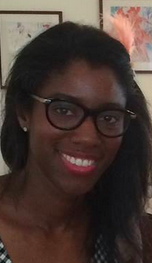

CRISSY SPIVEY

W: crissyspivey.com E: crissyspivey@gmail.com P: 315.491.6129
Statement of intent: I am a television trends-expert, digital producer, social marketer, and strategist, and leader of integrated partnerships. I want to use my strong network of relationships, my knack for knowing whatʼs hot in pop culture, and love of all-things-television to create and execute out-of-the-box digital campaigns and programming. Iʼm looking for an exciting, collaborative, work setting, where my passion and playful energy are equally matched.
Viacom
New York, NY
Digital Director, November 2014-Present
Oversee digital strategy and execution of digital projects within Catalyst --Viacom's internal agency.
R/GA
New York, NY Digital Producer, January 2014 – November 2014
- Lead global digwhiteital initiatives for Samsung Global and L’Oreal, while fostering key international client relationships at the worldʼs leading digital agency.
- Managing projects that include: site rebrand, content strategy, social content, thought leadership, digital site overhauls with CG animation, and more.
- A dedicated leader of cross-discipline teams of experience designers, creative directors, digital studio specialists, and copywriters, with a proven track record of developing partnerships for large scale campaigns to elevate the brand and sales.
NBCUNIVERSAL
New York, NY
Content Strategist and Digital Producer, May 2012 – January 2014
- Built out the digital ecosystem of NBCUniversalʼs Integrated Media Agency (newly named Content Innovation Agency), the department responsible for B2B communications for NBCUʼs 70+ properties.
- Led campaigns, social media activations social marketing, and website launches to promote channels including Bravo, E!, and Syfy, winning an award in Advertising Age.
- Creation of partnerships with Google and Hewlett Packard, led to projects like NBCUʼs AMPLIFIED, the first of its kind augmented-reality campaign on Tumblr, in the New York Times, and the Wall Street Journal.
- Department lead in ensuring all digital projects were on time, budget, and trend leader in the digital space. Led the digital branch of the massive Healthy at NBCU campaign to promote healthy content across all of NBCUʼs online platforms including the Today Show.
BREAKTHROUGH
New York, NY
Content Strategist and Digital Producer, May 2006 – May 2012
- Developed and executed digital social justice campaigns with celebrity talent including: Margaret Cho, Cherry Jones, Victor Garber, and more (online video games, animations, documentaries, user- generated projects) featured in the New York Times, NY1, The Huffington Post.
COURT TV (now called Tru TV)
New York, NY
Documentary Production Associate – June 2003-December 2005
- Read and edited scripts, oversaw edit sessions, and overall coordination of television programs
EDUCATION
SYRACUSE UNIVERSITY/ S.I. NEWHOUSE SCHOOL OF PUBLIC COMMUNICATIONS
SYRACUSE, NY
M.A. in Television, Radio, and Film, May 2003
UNIVERSITY OF ROCHESTER
ROCHESTER, NY
B.A. in English, Minor: Journalism, May 2001
Study abroad experience concentrating in writing and literature, Fall 2000
ADVANCED STUDIES IN ENGLAND with OXFORD UNIVERSITY, ENGLAND
Study abroad experience concentrating in writing and literature, Fall 2000